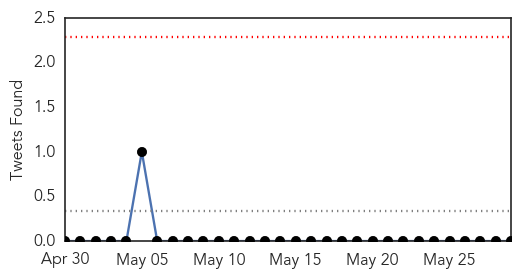
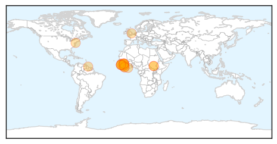
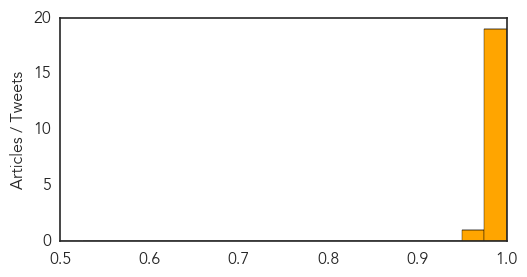
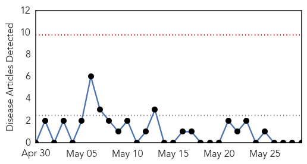

Ebola
30-Day Web Trend
0 alerts, 0 warnings

30-Day Twitter Trend
0 alerts, 0 warnings

Article Locations
Article Confidences
Top Articles:
- 1.000
- Sierra Leone Changes Strategy to Fight Ebola Outbreak
- 1.000
- Can It Be Controlled?
- 1.000
- West Africa Ebola outbreak still spreading, "situation serious" -WHO
- 1.000
- WHO says spread of Ebola cases in Guinea is serious
- 1.000
- Ebola outbreak 'situation serious' - WHO
- 1.000
- Ebola: Deadly outbreak crosses border as mistrust hampers medical staff
- 1.000
- WHO team in Sierra Leone fighting virus
- 1.000
- Guinea's Capital, Conakry Records First New Ebola Cases
- 1.000
- Ghana, Business Advice, Jobs, News, Business Directory, Real Estate, Finance, Forms, Auto
- 1.000
- Ebola outbreak: Medics travel to eastern Sierra Leone
- 1.000
- Doctors struggle to contain Ebola outbreak
- 1.000
- Ebola still spreading in West Africa
- 0.999
- Ebola virus disease, West Africa – update
- 0.999
- West Africa Ebola Outbreak Continues To Spread, 'Situation Serious'
- 0.995
- Talking zoonoses with Philadelphia's Public Health Nerd Club — NewsWorks
- 0.988
- Ebola vaccine for chimps works but may never be used
- 0.986
- West Africa Ebola outbreak still spreading, “situation serious” -WHO
- 0.984
- WHO Says West Africa Ebola Situation "Serious"
- 0.978
- WHO experts in Sierra Leone to help fight Ebola
- 0.974
- as two die…12 man Ebola experts for Salone « Awoko Newspaper
Top Tweets:
- 0.948
- Ebola SierraLeone (Gvt sources): Suspected cases 25; Confirmed 7 Confirmed deaths 2; Probable 3. 3 cnfrmd cases fled clinic, still lost.
Mumps
30-Day Web Trend
0 alerts, 0 warnings

30-Day Twitter Trend
0 alerts, 0 warnings

Article Locations

Article Confidences

Top Articles:
-
No articles found for May 29, 2014
Top Tweets:
-
No tweets found for May 29, 2014